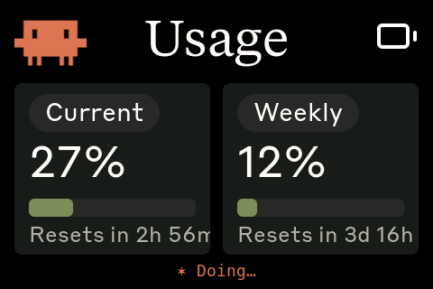

Cmeter3.5 — ESP32-S3-Touch-LCD-3.5
A fork of Clawdmeter by @hermannbjorgvin. Hardware: Waveshare ESP32-S3-Touch-LCD-3.5 (wiki · schematic).
A desk-side Claude Code usage monitor and event notifier.
A small ESP32-S3 touchscreen sits on your desk and shows your live Anthropic usage (5-hour and weekly rate-limit utilization + reset countdowns), and reacts to your Claude Code sessions in real time — a coloured banner and a Warcraft-peasant voice line when a session starts, when you send a prompt, when Claude finishes, on errors, and when Claude needs your permission.
This is a hardware fork of the upstream Clawdmeter, re-targeted to the Waveshare ESP32-S3-Touch-LCD-3.5 (non-"B") and re-architected to feed the device over USB serial (no Bluetooth), because it runs from WSL2.

The 480×320 landscape Usage dashboard (live capture): current 5-hour and weekly rate-limit utilization with reset countdowns. Tap the screen to toggle the pixel-art Clawd splash.
1. Hardware
| Component | Part | Bus / Pins |
|---|---|---|
| Display | ST7796 320×480 IPS, run 480×320 landscape | SPI: DC=3, CS=-1, SCK=5, MOSI=1, MISO=2; BL=6 (active-high) |
| Touch | FocalTech FT6336 capacitive | I²C @ 0x38 (SensorLib TouchDrvFT6X36) |
| I/O expander | TCA9554 | I²C @ 0x20 — ch.1 = LCD reset pulse |
| PMU | AXP2101 | I²C @ 0x34 — LCD power rails + battery |
| Audio codec | ES8311 + NS4150B amp + integrated speaker | I²C @ 0x18; I²S MCLK=12 BCLK=13 LRCK=15 DOUT=16 |
| IMU | QMI8658 | I²C @ 0x6B (initialised, unused) |
| Shared I²C | — | SDA=8, SCL=7 |
| Power/USB | USB-C (USB-JTAG/serial), /dev/ttyACM0 |
— |
No Bluetooth and no physical buttons are used — both were removed. The only input is the touchscreen (tap toggles the splash animation ↔ the dashboard).
Identifying your board. The genuine "3.5B" uses an AXS15231B QSPI panel with touch at 0x3B. This project is for the non-B 3.5: ST7796 over plain SPI, FocalTech touch at 0x38 (chip-ID reg 0xA8 = 0x11, 0xA3 = 0x64). If an I²C scan shows 0x38 and no 0x3B, you have this board.
2. Architecture
WSL2 (Linux) ESP32-S3 device
┌───────────────────────────────────┐ ┌──────────────────────────┐
│ Claude Code ──hooks──▶ clawd-event.sh ─┐ │ main.cpp serial router │
│ │ ├──▶│ {"ev":..} → sound+banner│
│ claude-usage-serial.py ─────────────┘ │ │ {"s":..} → dashboard │
│ (polls api.anthropic.com /v1/messages, │ │ "screenshot" → PNG dump │
│ reads rate-limit headers, 60s) │ │ │
└───────────────────────────────────┘ USB │ ST7796 LCD + FT6336 touch │
serial │ ES8311 audio (warcraft) │
└──────────────────────────┘
- Transport: USB serial (
/dev/ttyACM0), newline-delimited JSON. No BLE. - Usage:
claude-usage-serial.pyPOSTs a minimal request tohttps://api.anthropic.com/v1/messagesand reads theanthropic-ratelimit-unified-5h/7d-*response headers, every 60 s. Token is read fresh from~/.claude/.credentials.jsoneach poll (Claude Code keeps it refreshed) — nothing secret is stored on the device. Usage updates are silent (screen only). - Events: Claude Code hooks →
clawd-event.sh <name>→{"ev":"<name>"}on the serial port → firmware plays the matching warcraft voice clip (real game-sounds audio, embedded as PCM) + a coloured banner for ~2.2 s.
Firmware layout (firmware/src/)
| File | Purpose |
|---|---|
main.cpp |
setup/loop, hardware init, serial-line router |
display_cfg.h |
pins, 480×320 landscape, extern objects |
ui.{h,cpp} |
splash + usage screens, event banner overlay |
splash.{h,cpp} |
20×20 pixel-art creature, 16× upscale, centred 320×320 |
sound.{h,cpp} |
ES8311/I²S; per-event clip playback + boot beep |
sounds_warcraft.h |
generated embedded PCM (see §7) |
power.{h,cpp} |
AXP2101 rails + battery |
imu.{h,cpp} |
QMI8658 (unused output) |
usage_rate.*, data.h, icons.h, logo.h, font_*.c |
dashboard support |
lib/ |
vendored GFX 1.5.5 (Waveshare ST7796, SPI-patched), TCA9554, es8311 |
3. Install / setup
3.1 Prerequisites
- Windows + WSL2 (Ubuntu). The board's USB only reaches WSL2 via
usbipd. usbipd-winon Windows (winget install --exact dorssel.usbipd-win, or the MSI from https://github.com/dorssel/usbipd-win/releases).ffmpeg,python3in WSL2 (for screenshots / regenerating sounds).- PlatformIO. Not required system-wide — a venv lives at
./.piovenv(python3 -m venv .piovenv && .piovenv/bin/pip install platformio). - Claude Code logged in (so
~/.claude/.credentials.jsonhas an access token).
3.2 Attach the device to WSL2
In a Windows Administrator PowerShell:
usbipd list # find the ESP32-S3 (VID 303a:1001), note BUSID
usbipd bind --busid <BUSID> # one-time (persists)
usbipd attach --wsl <Distro> --busid <BUSID> # re-run after every replug/reboot
<Distro> is your WSL distribution name (e.g. Ubuntu-24.04).
Confirm in WSL2: ls /dev/ttyACM0.
Recommended — auto-attach. Stage usbipd-autoattach.ps1 to a Windows path
and run it once from an Admin PowerShell with -RunAsUser set to the account
that owns your WSL distro (required on AD/corp machines where UAC elevates to a
different user):
cd C:\Users\<you>
powershell -ExecutionPolicy Bypass -File .\usbipd-autoattach.ps1 `
-RunAsUser "<domain>\<your-user>" `
-Distribution Ubuntu-24.04
3.3 Build & flash the firmware
./.piovenv/bin/pio run -d firmware
./.piovenv/bin/pio run -d firmware -t upload --upload-port /dev/ttyACM0
On boot you should hear a two-tone self-test beep and see the Usage dashboard (dashes until the daemon feeds it).
3.4 Start the usage daemon (WSL2)
nohup python3 daemon/claude-usage-serial.py /dev/ttyACM0 >/tmp/claude-usage.log 2>&1 &
tail -f /tmp/claude-usage.log # should log 'sent: {"s":..}' every ~60s
Stdlib-only (no pip deps). PORT=/dev/ttyACM0 POLL=60 are overridable via env.
3.5 Enable Claude-session event notifications
Hooks live in ~/.claude/settings.json (already added by this project, rtk
PreToolUse preserved; backup at settings.json.bak):
| Claude Code hook | Event | Device reaction |
|---|---|---|
SessionStart |
session-start | "Ready to work!" — green banner |
UserPromptSubmit |
task-acknowledge | "Work work." — blue banner |
Stop |
task-complete | "Job's done!" — green banner |
PostToolUseFailure |
error | "That was a mistake." — red banner |
Notification |
permission | "What now?" — amber banner |
These mirror the game-sounds plugin's 5 categories, so the host plays the
pack while the device shows a banner + plays the same-event voice. Restart
Claude Code for hook changes to take effect (hooks load at session start). New
sessions pick them up automatically. tail -f /tmp/clawd-events.log shows hooks
firing.
4. Daily use
- Nothing if you ran
usbipd-autoattach.ps1(§3.2); otherwise (after reboot/replug)usbipd attach --wsl <Distro> --busid <BUSID>in Windows admin PS. nohup python3 daemon/claude-usage-serial.py /dev/ttyACM0 >/tmp/claude-usage.log 2>&1 &- Use Claude Code normally — the dashboard tracks usage; banners + voices fire on session events.
Tap the screen to toggle the splash creature ↔ the usage dashboard.
5. Sounds
- Event sounds are the real game-sounds warcraft clips (peasant voice lines), decoded from the plugin's MP3s, loudness-normalised, and embedded in flash as PCM. One iconic clip per event (the plugin rotates several; the device uses a fixed one to stay self-contained).
- Boot beep: synth two-tone, an audio self-test (if you hear it, the speaker path works).
- Usage refresh: silent by design. (It used to chime every 60 s — that was the "random beeps even when idle"; removed.) A one-shot alert tone plays only if your rate-limit status transitions OK → not-OK.
- Volume:
#define SND_VOLUME 60infirmware/src/sound.cpp(0–100). Clip loudness target is set in the ffmpegloudnormstep (§7).
6. Troubleshooting
| Symptom | Cause / fix |
|---|---|
No /dev/ttyACM0 |
usbipd detached. One-off: usbipd attach --wsl <Distro> --busid <BUSID> (Windows admin PS). Permanent: run usbipd-autoattach.ps1 -RunAsUser "<domain>\<you>" once (§3.2). |
| Dashboard shows dashes | Daemon not running / token missing. Check /tmp/claude-usage.log; ensure Claude Code is logged in. |
| No event banners/sounds | Hooks need a Claude Code restart. Check /tmp/clawd-events.log: skip (no device) = port detached; sent = delivered. |
| Black screen | Wrong board profile. This is ST7796 SPI — confirm I²C 0x38 (FT6336), not 0x3B. The screenshot cmd dumps the framebuffer and will look fine even if the panel is dark — not a panel test. |
| AXP2101 init failed (serial) | Intermittent flaky shared-I²C; only affects battery %/charging. Power-cycle usually clears it. |
| Sounds inaudible but beep works | Clip level too low — re-run §7 with a higher loudnorm target, or raise SND_VOLUME. |
screenshot.sh won't run |
CRLF line endings (Windows/OneDrive). sed -i 's/\r$//' screenshot.sh && chmod +x screenshot.sh. |
Build can't find pio |
Use ./.piovenv/bin/pio (not on PATH). |
7. Regenerating the embedded sounds (e.g., switch game-sounds pack)
The device pack is baked into firmware/src/sounds_warcraft.h. To rebuild it
from a different game-sounds pack:
PACK=warcraft # any pack dir under the game-sounds plugin's sounds/
SRC=~/.claude/plugins/cache/citedy/game-sounds/3.0.0/sounds/$PACK
mkdir -p /tmp/wc
# pick one clip per event (paths vary per pack), then for each:
ffmpeg -nostdin -y -i "$SRC/<event>/<clip>.mp3" \
-af "loudnorm=I=-12:TP=-1.0,alimiter=limit=0.97" \
-ac 1 -ar 22050 -t 2.0 -f s16le /tmp/wc/<event>.pcm
# then emit C arrays into firmware/src/sounds_warcraft.h
# (snd_session_start / _task_acknowledge / _task_complete / _error / _permission,
# each with a matching <name>_len), and rebuild.
SND_RATE in sound.cpp (22050) must equal the -ar rate, or playback is
pitch-shifted.
8. Credits
- Upstream Clawdmeter concept & firmware: @hermannbjorgvin.
- Clawd pixel-art animation: @amaanbuilds.
- Event sound effects: the game-sounds Claude Code plugin (citedy) — warcraft pack.
- This ESP32-S3-Touch-LCD-3.5 port + USB-serial/sound/event work: Jean-Roch Bécart.